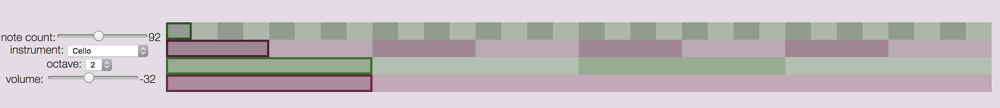
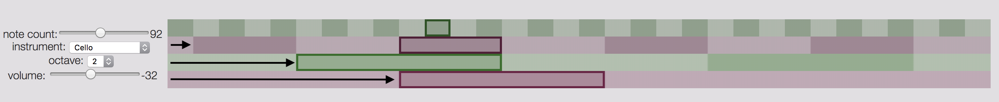

Biologically, we do different things with our ears than our eyes, so when we come to understanding structure in the world, [...] we can use our ears to understand something about it which is different to what we can understand with our eyes.
If the visual sense is already highly loaded, sonification can be a suited alternative to provide additional information
function liveQuery() {
gapi.client.analytics.data.realtime.get({
ids: `ga:${constants.VIEW_ID}`,
metrics: "rt:activeUsers",
dimensions: "rt:goalId"
// more metrics and dimensions could be added in the future
}).then(response => {
// response is ~ 743B!
// response.result.rows: [["(not set)","90"],["1","2"],["11","2"],["3","2"],["4","40"]]
const groups = mapGoalsToGroups(response.result.rows);
// {groupA: 92, groupB: 40, groupC: 4}
scheduleNotes(groups);
// recurse
setTimeout(liveQuery,60000);
})
}
0 0 0 0 0 0 0
| | | | | | |
| | | | | | ⤷ 2^0 = 1
| | | | | |
| | | | | ⤷---- 2^1 = 2
| | | | |
| | | | ⤷-------- 2^2 = 4
| | | |
| | | ⤷------------ 2^3 = 8
| | |
| | ⤷---------------- 2^4 = 16
| |
| ⤷-------------------- 2^5 = 32
|
⤷------------------------ 2^6 = 64
92 = 1 0 1 1 1 0 0
| | | | | | |
| | | | | | ⤷ 2^0 = 1 * 0 = 0
| | | | | |
| | | | | ⤷---- 2^1 = 2 * 0 = 0
| | | | |
| | | | ⤷-------- 2^2 = 4 * 1 = 4
| | | |
| | | ⤷------------ 2^3 = 8 * 1 = 8
| | |
| | ⤷---------------- 2^4 = 16 * 1 = 16
| |
| ⤷-------------------- 2^5 = 32 * 1 = 0
|
⤷------------------------ 2^6 = 64 * 1 = 64
___
92


Ambient music must be able to accommodate many levels of listening attention without enforcing one in particular; it must be as ignorable as it is interesting.
[Y]ou only need to have three legs on a table. After two, three meant many, and that was it, you don't have to go any further than that: the three components of songwriting, the three chords of rock 'n' roll or the blues--that always seemed to be the number.
Music makes you feel something [...] I don't remember the last time I was moved by looking at a line chart. I think it's the right medium for human data, a medium that has this very primal, visceral quality to it.